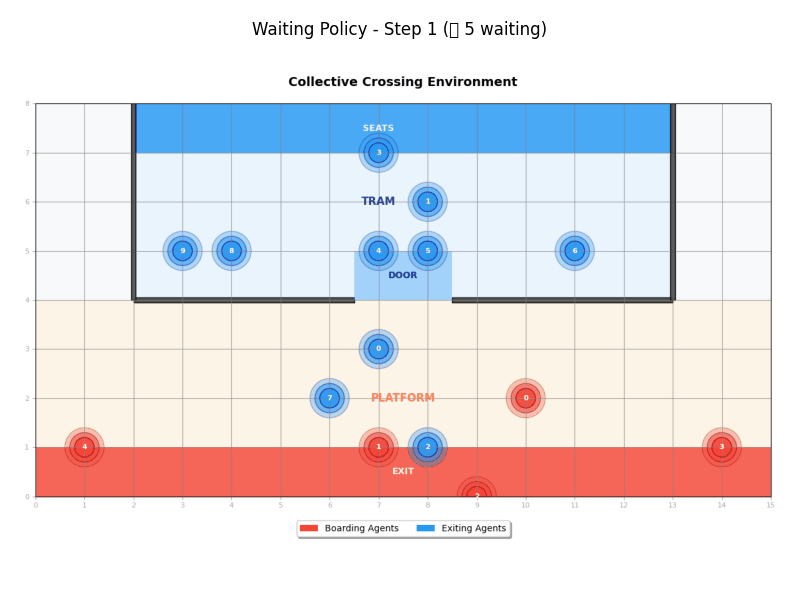

🚇 Collective Crossing


A multi-agent reinforcement learning environment for simulating collective behavior in tram boarding/exiting scenarios. This project provides a grid-world environment where multiple agents interact to achieve their goals while sharing some resources together.
🎯 Overview
The CollectiveCrossingEnv simulates a minimal tram boarding scenario where coordination is essential to find the optimal collective behavior:
- Boarding agents start in the platform area and navigate to the tram door
- Exiting agents start inside the tram and navigate to the exit
- Simple collision avoidance prevents agents from occupying the same space, which makes the passing through the tram door a bottleneck and a challenge
- Configurable geometry allows customization of tram size, door position, and environment
- Flexible reward system supports multiple reward strategies (default, simple distance, binary)
- Customizable termination configurable episode termination conditions
- Adaptive truncation flexible episode truncation policies
🚀 Quick Start
from collectivecrossing import CollectiveCrossingEnv
from collectivecrossing.configs import CollectiveCrossingConfig
from collectivecrossing.reward_configs import DefaultRewardConfig
from collectivecrossing.terminated_configs import AllAtDestinationTerminatedConfig
from collectivecrossing.truncated_configs import MaxStepsTruncatedConfig
from collectivecrossing.observation_configs import DefaultObservationConfig
# Create environment with configurable systems
reward_config = DefaultRewardConfig(
boarding_destination_reward=15.0,
tram_door_reward=10.0,
tram_area_reward=5.0,
distance_penalty_factor=0.1
)
terminated_config = AllAtDestinationTerminatedConfig()
truncated_config = MaxStepsTruncatedConfig(max_steps=100)
observation_config = DefaultObservationConfig()
config = CollectiveCrossingConfig(
width=12, height=8, division_y=4,
tram_door_left=5, tram_door_right=6, tram_length=10,
num_boarding_agents=5, num_exiting_agents=3,
render_mode="rgb_array",
reward_config=reward_config,
terminated_config=terminated_config,
truncated_config=truncated_config,
observation_config=observation_config
)
env = CollectiveCrossingEnv(config=config)
observations, infos = env.reset(seed=42)
🎮 Key Features
- Multi-agent simulation with boarding and exiting agents
- Collision avoidance prevents agents from overlapping
- Configurable geometry customizable tram and door positions
- Ray RLlib compatible uses MultiAgentEnv API
- Multiple rendering modes ASCII and RGB visualization
- Type-safe configuration using Pydantic v2
- Flexible reward system multiple reward strategies with custom configurations
- Customizable termination configurable episode ending conditions
- Adaptive truncation flexible episode timeout policies
- Configurable observations customizable observation functions and spaces
📚 Documentation
🌐 Live Documentation - Complete documentation site
- Installation Guide - Detailed setup instructions
- Usage Guide - Complete usage examples and configuration
- Baselines - Baseline policies and demo scripts
- Development Guide - Testing, contributing, and development
- Features Overview - Comprehensive feature descriptions
- Local Deployment - Simple deployment guide
🛠️ Installation
# Clone and install
git clone https://github.com/nima-siboni/collectivecrossing.git
cd collectivecrossing
uv sync
See Installation Guide for detailed instructions.
🚀 Quick Deploy
# Deploy documentation to GitHub Pages
./scripts/docs.sh deploy
See Local Deployment Guide for details.
🧪 Testing
# Run tests
uv run pytest
# Run with coverage
uv run pytest --cov=collectivecrossing
🤝 Contributing
- Fork the repository
- Create a feature branch
- Make your changes
- Run tests
- Submit a pull request
See Development Guide for detailed contribution guidelines.
📄 License
This project is licensed under the Apache License 2.0.
Happy simulating! 🚇✨